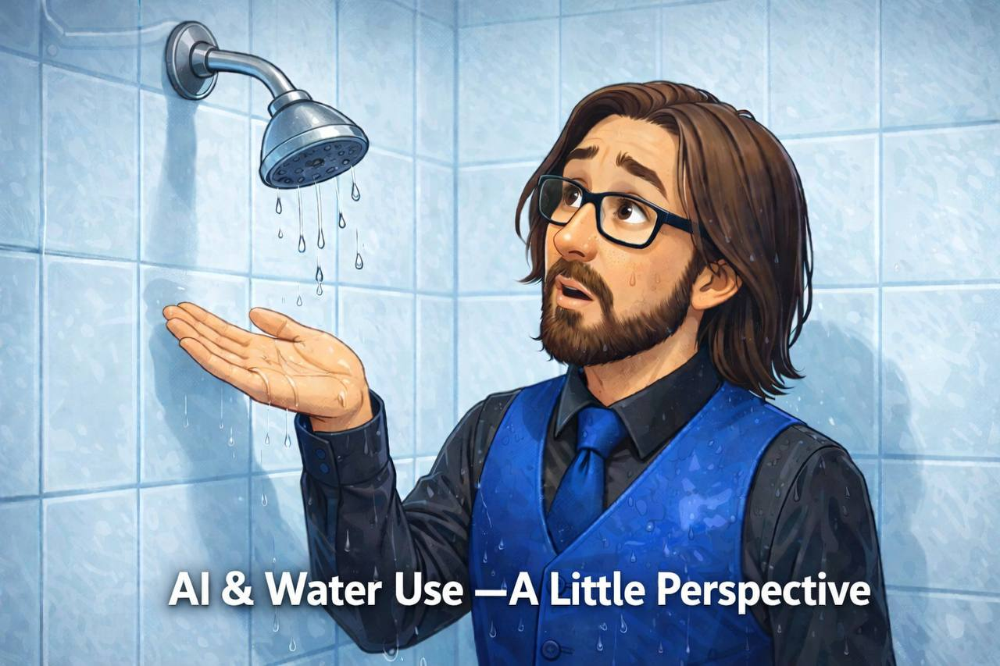

In the dialogue surrounding artificial intelligence, the topic of water consumption for data center cooling often surfaces. It's a concern that naturally captures attention, yet the conversation sometimes lacks the broader context necessary to fully understand the implications.
While headlines frequently highlight the environmental impact of AI, the quieter details often escape notice. Many focus on the immediate figures—gallons of water used per response generated by AI models—without considering the relative scale. This shift in focus can lead to misconceptions about AI's environmental footprint, overshadowing the more nuanced reality.
Understanding the comparative use of water in our daily lives offers a different lens. Everyday activities such as flushing a toilet or taking a shower consume water in quantities that, when examined closely, reveal the broader context in which AI's water use resides. This isn't to diminish the importance of conservation, but rather to ground the conversation in a scale that more accurately reflects real-world usage.
At the heart of AI's water usage is the cooling of data centers. These facilities, essential for running complex AI algorithms, generate significant heat during operation, necessitating effective cooling systems to maintain optimal performance and prevent overheating. This is where water comes into play, often as part of cooling towers or evaporative cooling systems that dissipate heat efficiently.
The mechanics of these systems are evolving. Data centers are increasingly adopting advanced techniques to reduce water consumption, such as air-side economization, which leverages outside air for cooling, and liquid cooling, a method that uses liquids with higher heat transfer properties than air. These innovations reflect a broader industry trend toward sustainability, but they also highlight the complexity of reducing environmental impact while maintaining technological advancement.
Moreover, AI companies are becoming more transparent about their water use, providing clearer data to the public. This transparency allows for a more informed dialogue about the environmental costs of AI and the steps being taken to mitigate them.
Water is a finite resource, and its conservation is critical in an era of environmental change. Thus, understanding AI's water footprint is important, not just for its own sake, but for informing responsible use of technology. By comparing AI's water use with everyday activities, we gain a clearer picture of its relative impact and the areas where conservation efforts can be most effective.
However, it's crucial to balance this understanding with the benefits that AI provides. Technologies powered by AI contribute to advancements in healthcare, environmental monitoring, and numerous other fields, offering solutions that can, in turn, aid in resource conservation. The potential benefits are significant, but they must be weighed against the environmental costs.
The limitations of reducing water usage in AI are also worth noting. While technical advancements can lower the consumption footprint, the growing demand for AI-driven services means that absolute reductions may be challenging without broader systemic changes in how technology is integrated into daily life.
As we look to the future, the trajectory of AI's water use suggests a path of gradual improvement rather than radical transformation. Innovations in cooling technology and increased transparency may lead to more efficient data centers, reducing water use incrementally.
Yet, the broader implication is a shift in how we perceive the costs and benefits of technology. By grounding these discussions in real-world context, we can better navigate the balance between technological progress and environmental stewardship. This quiet evolution in understanding may ultimately lead to more informed decisions about technology's place in our lives and its impact on the planet.
Dr.WinMac explores the infrastructure and automation changes that affect everyone, explained without jargon.
Back to Blog